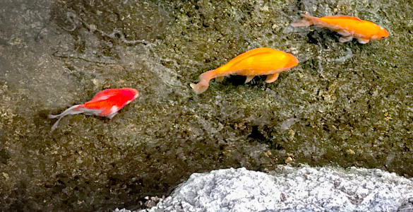

Koi
Koi, or more specifically nishikigoi, are colored varieties of Amur carp that are kept for decorative purposes in outdoor koi ponds or water gardens.

Koi is an informal group of the colored variants of the Amur carp. Several varieties are recognized by the Japanese. Koi varieties are distinguished by coloration and patterning and scales. Some of the major colors are white, black, red, yellow, blue, and cream. The most popular category of koi is the Gosanke, which is made up of the Kohaku, Taisho Sanshoku, and Showa Sanshoku varieties.